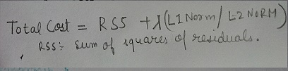
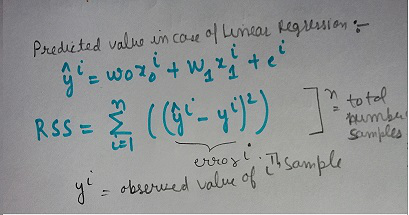
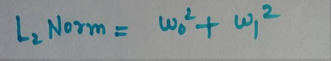
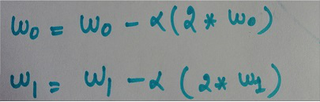
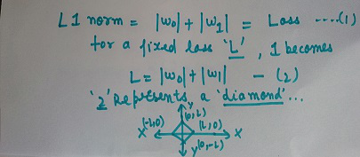
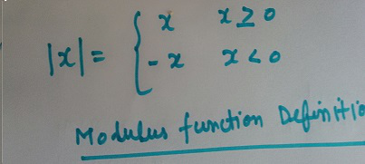
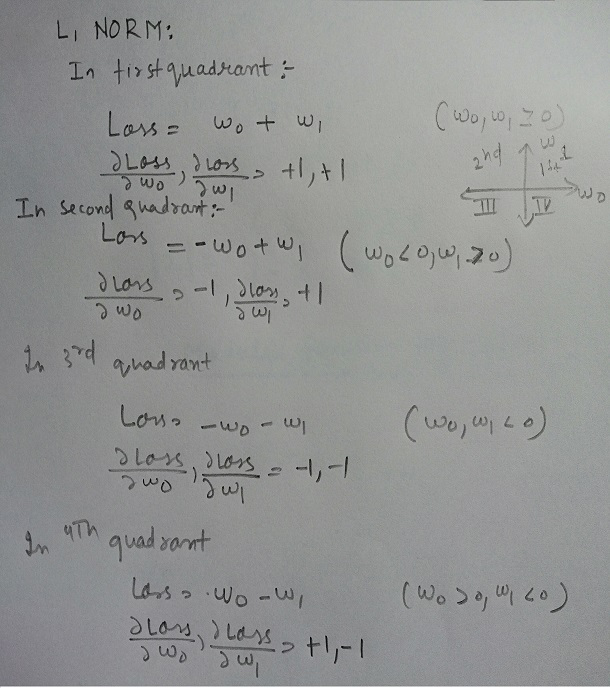
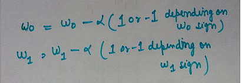

NOTE: The circle above has no technical meaning in case you are wondering.
NOTE: The circle above has no technical meaning in case you are wondering.
In this post i will try to discuss intuition behind L2 norm and L1 norm working in context of Linear Regression. Although L2 norm and L1 norm are used quite heavily in machine learning industry with various loss functions We will discuss it here in context of Linear Regression. In case of Linear Regression Total cost is:
RSS is the main loss function used to estimate the cost of fitting data and qualitavely measures the mean data line across all data points.
We suppose we have two features only ,no constant feature (meaning no intercept ) for now and corresponding two weights being w_0 and w_1.Then RSS(residual squares sum)for this case becomes :
L2 norm is sum of the square of the weights and hence for this case it becomes:
Lambda is a hyperparameter which is estimated over the validation dataset and different for the different datasets. and measures the percentage of the L2 or L1 norm to be included in the total cost.
We have to decrease the L2 norm also to decrease the total_cost, so this treatment remains useful along with RSS combined. Both w_0 and w_1 are independent variables and Loss is dependent variable here. Although we contain 3 variables here but we will plot them in 2d for easy visualization.
We will use vanilla Gradient descent with a fixed learning rate to minimise the loss which includes finding derivatives of the independent variables w.r.t Loss .
Let us see how L2 norm behaves like:
For L2 norm gradient descent step looks like this :
Use step button to iteratively update the weights and try new values by filling w_0 and w_1 values and resettingit .
Loss :
w_0 value is
w_1 value is
We can see that slope/derivative is directly proportional to the value of the weight at that step.This has a profound effect on the values of weights being updated.Even if we have a very small value of say w_0 and bigger value of w_1, update step will not decrease the w_0 sharply as w_1, hence w_0 remains close to zero but doesnot become zero.
Let us see how L1 norm behaves like :
Let use see that modulus function present in L1 norm which is responsible for that dimond shape
And so the L1 norm becomes:
We can see derivates are independent of variables and of constant value 1 or -1 and hence update step becomes 
It is clear that derivative is independent of the variables , we are simply decreasing the variables and if we think of these variables on a grid ,it simply becomes "COORDINATE DESCENT", hence name of the algorithm given in the case of L1 norm. As we see below once a variable becomes zero , it becomes zero..it is quite interesting.Say w_0 is 0.3 and in next step it becomes -0.01 ,which changes the gradient to -1 and hence it is again pushed to zero . Here i am using a little big learning rate to show how it actually happens.

Use step button to iteratively update the weights and try new values by filling w_0 and w_1 values and resetting it .
Loss :
w_0 value is
w_1 value is
In case of non redundant features , RSS will prevent the L1 norm to put all other weightage of important features to zero as it will highly increase our RSS cost, hence only redundant features end up having zero weightage. One thing we can note here that either of the redundant features can end up having weight equals to zero depending on the initial position of weights and you can see for yourself that if initial weights are similar in value, then L1 norm just goes bisecting the quadrant upto the center.
In the next post we will try to visualise the Total cost and will also see how Lambda fits in the visualization and what optimal solution looks like.